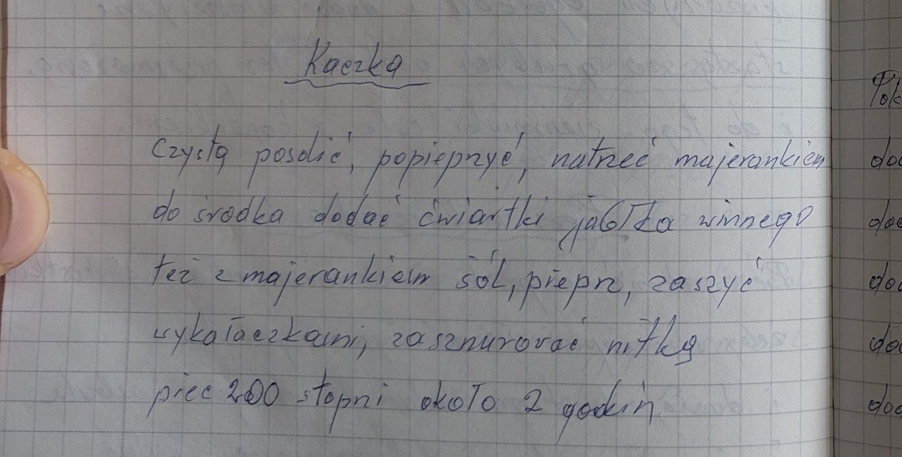
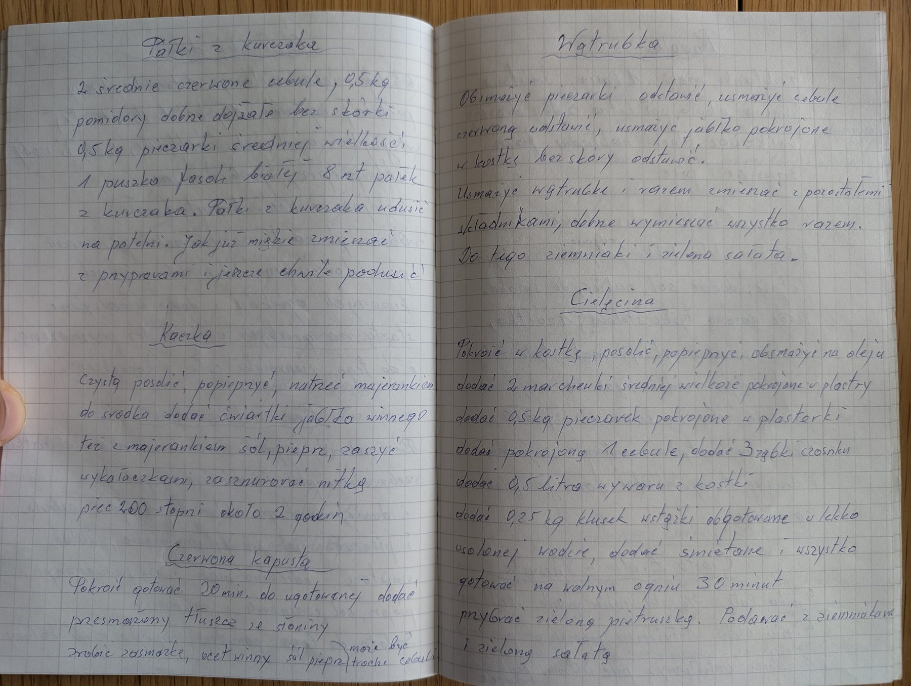

Kaczka


Składniki
- kaczka
- sól, pieprz
- majeranek
- jabłka winne (kwaśne)
Przygotowanie
- Czystą kaczkę posolić, popieprzyć i natrzeć majerankiem.
- Do środka włożyć ćwiartki kwaśnego jabłka, też z majerankiem, solą i pieprzem.
- Zaszyć wykałaczkami i zasznurować nitką.
- Piec w 200°C około 2 godzin.
Oryginalny zapis
Kaczka Czystą posolić, popieprzyć, natrzeć majerankiem do środka dodać ćwiartki jabłka winnego też z majerankiem sól, pieprz, zaszyć wykałaczkami, zasznurować nitką piec 200 stopni około 2 godzin